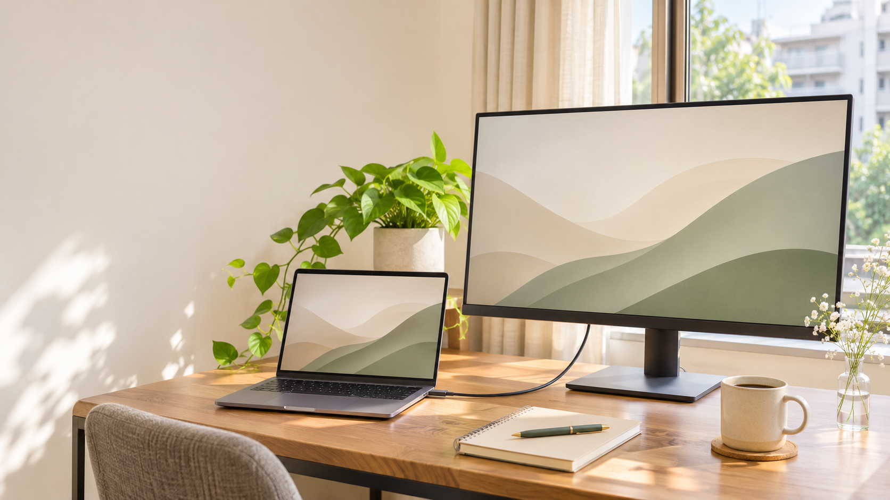

ノートPCの画面が狭い人へ。
モニター選びで先に見るべき2つ
「資料を見ながら入力したい」「会議と作業を同時に開きたい」。そんな小さな詰まりを、モニター1台で減らせるかもしれません。

27インチの画面を選ぶ前に確認したいのは、PCから映像を出せるか、そしてモニターの給電で足りるかです。
なぜ「USB-Cなら一本でOK」ではないのか
USB-Cは端子の形です。PCによっては充電やデータ通信だけに対応し、外部画面の映像を出せない場合があります。製品ページやPCの仕様表で「DisplayPort Alt Mode」など、映像出力への対応を確認してください。
もう一つは給電量です。今回の候補は最大65W。日常的な作業には合うPCも多い一方、高性能なノートPCでは電力が足りず、純正ACアダプターの併用が必要になることがあります。
Dell S2725DC
27インチ・QHD・IPS・144Hz。USB-C最大65W給電に加え、USBハブ、HDMI、DisplayPortを備えるバランス型の候補です。高さ・角度・縦回転を調整したい人にも向きます。
向かないケース：PCに65Wを超える給電が必要な場合、デイジーチェーン接続を前提にする場合。
Amazonで価格・在庫を見るPHILIPS 27E1N2600AE
27インチ・QHD・IPS・120Hz。USB-C最大65W給電、USBハブ、高さ調整、5年保証を備える候補です。外部画面を増やしつつ、ノートPCまわりの配線を減らしたい場合の比較対象になります。
こちらも映像出力対応と必要給電量の確認が必須です。価格や在庫は変動します。
Amazonで価格・在庫を見るQHDと4Kで迷ったら
写真や動画を細部まで扱うなら4Kも候補です。一方、資料作成、表計算、ブラウザ、会議を中心に使うなら、27インチのQHDは表示領域と価格のバランスを取りやすい選択肢です。大事なのは「高い解像度」ではなく、いま一番切り替え回数を減らしたい作業に合うかどうかです。
購入前に、30秒だけ確認
- PCのUSB-Cは映像出力に対応している
- PCの必要給電量は65W以下、またはACアダプター併用の前提がある
- 机の奥行き・スタンドの設置面積を測った
- HDMIやDisplayPortなど、同時に使う機器の端子数が足りる
Amazonのアソシエイトとして、小さく始める仕事ノートは適格販売により収入を得ています。
※本文はメーカー・販売ページの公開仕様をもとにした選定ガイドであり、実機レビューではありません。価格・在庫・仕様・対応機器は購入前に必ず販売ページでご確認ください。